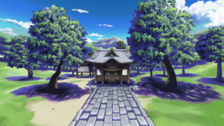

- Welcome to Touhou Wiki!
- Please register to edit. For assistance, check in with our Discord server or IRC channel.
Hakurei Shrine
Hakurei Shrine ha̠kɯᵝɺ̠e̞ː d͡ʑĩnd͡ʑʲa̠ | |
|---|---|
|
 The Hakurei Shrine as seen in Hopeless Masquerade & Urban Legend in Limbo
| |
| Location |
East of Gensokyo, on the Great Hakurei Barrier between Gensokyo & the Outside World |
| Residents |
|
Appearances | |
| Official Games | |
| |
| Other | |
| |
The Hakurei Shrine (博麗神社 Hakurei Jinja) is a small, run-down Shinto shrine located on the Great Hakurei Barrier on the east side of Gensokyo. It's a key location that has appeared in many of the official games' prologues, stages, in character endings and in other official literature by ZUN. It's the home of the Touhou Project's protagonist: Reimu Hakurei.
The shrine has become a popular hangout for all sorts of youkai who Reimu and company defeat in the course of the games. However, because of this, very few (normal) humans come to the shrine, and even fewer (if any at all) leave donations, but because it is a place where human faith gathers, Aunn Komano tends guard the place without being asked.
The Hakurei Shrine was once the only shrine in Gensokyo, but the Moriya Shrine has since settled on the Youkai Mountain. Also adding to religious competition is the Myouren Temple and the Hall of Dreams' Great Mausoleum; the former is a Buddhist temple led by Byakuren Hijiri and the latter is held by Taoists run by Toyosatomimi no Miko.
From Wild and Horned Hermit chapter 8, it's known that there is money scattered around the shrine. Although the ones found by Reimu may have been planted there by the Unnamed Kuda-gitsune. It's later seen that like all shrines, the Hakurei Shrine offers omamori. Although with the Hakurei Shrine's god in question, it's unknown if the omamori would even provide anyone with divine power.
General information[edit]
The Hakurei Shrine existed long before the sealing of Gensokyo in 1885,[1] and is known in the outside world as well.[2] The generations of Hakurei Shrine maidens have lived here for centuries.
The very existence of both Reimu Hakurei and her shrine ensures the continued existence of Gensokyo by protecting and maintaining the Great Hakurei Barrier, thus making it one of the most important locations in the Touhou Project.[3] However, even with its high status, the shrine has been attacked and destroyed by youkai several times over the course of the games. It's able to serve its function as a shrine even when destroyed, but not as a place to live.[4]
The theory of the Hakurei Barrier, Reimu Hakurei and the survival of Gensokyo that many of the residents like Hieda no Akyuu who explained this in Perfect Memento in Strict Sense believe may be rather sketchy. Aside from the destroyed shrine, when Reimu Hakurei didn't come back from the Moon in Silent Sinner in Blue, Aya Shameimaru talks about finding a new shaman for the Hakurei Shrine in a rather suspicious look. Although it isn't strange for some of the older characters to know a lot about the Hakurei Shrine, Aya seemed to know something important that wasn't made clear in Akyuu's article. Regardless of whether this is true or not, the shrine and shrine maiden appear to have more secrets than what is presently known.
Though the shrine has a patron god of its own, not much is known about it other than it has been steadily losing faith, power and prestige due to the lack of worshippers[5] and that it's angry about this situation.[6]
Structure and premises[edit]
Structurally, the shrine is old-fashioned and offers poor protection from the cold.[7] The grove of cherry trees behind the shrine is a particularly popular spot for flower viewing in spring.
There's a large donation box for visitors to leave money in, but since visitors are scarce, it's usually empty.[8] The Yin-Yang Orb, a powerful weapon usable only by blood members of the Hakurei clan, is also kept here. It was said in the PC-98 that the orb is the greatest treasure of the shrine.
Since the events of Mountain of Faith, Reimu has constructed a small shrine (about the size of a birdhouse) to Kanako Yasaka and Suwako Moriya at the edge of the Hakurei Shrine's grounds in an attempt to gather more faith. Despite its extremely small size, it does get an occasional visitor from the Human Village. Its blessings include a plentiful harvest and luck in danmaku battle.[9]
Geography and people[edit]

The shrine exists on the Great Hakurei Barrier between the outside world and Gensokyo, but is located in neither.[10] In fact, the shrine's only real purpose these days is to maintain the barrier that separates both worlds.[11] It's simultaneously accessible from both sides, but some unknown circumstances must be met in order to travel from one side to the other. In addition, though the shrine exists on both sides of the border, the shrine reachable from the outside world is allegedly old and uninhabited,[12] as far as those in Gensokyo know.[13]
Physically, the shrine is high in the mountains to the east from which all of Gensokyo is visible.[14] The path up from the Human Village is not difficult except in heavy snow, and even then the trip doesn't take more than an hour on foot.[15] Its location in the outside world is unknown (besides being in Japan), but it's near a city.[16]
Because it's located on the barrier, items from the outside world are known to sometimes appear near the shrine. Their use and purpose cannot usually be understood by the residents of Gensokyo, yet these items are still wondrous to both youkai and humans. Humans from beyond the border are also known to appear from time to time. As a result of these appearances, youkai and collectors keep a close eye on the shrine.[17]
The following characters are residents of the Hakurei Shrine:
- Reimu Hakurei, the resident shrine maiden, is the only character currently living inside the shrine.
- The Hakurei God, which is enshrined within the Yin-Yang Orbs.
- The Three Fairies of Light have taken up residence behind the shrine premises as of Oriental Sacred Place.
- Genjii, although he's from the PC-98 era and has yet to make a reappearance in a Windows game, ZUN has stated in at least two interviews that he imagines Genjii living in a pond behind the shrine.[18]
- Mima, an evil spirit that haunted the shrine premises throughout the PC-98. As she has yet to make an appearance in the Windows Touhou games, it's unknown if she's still at the shrine, if she has been retconned from the Touhou canon, or if she left the shrine by the present day.[19]
- Clownpiece is currently living underneath the shrine as of Visionary Fairies in Shrine.[20]
The Hakurei Shrine's appearances[edit]
The Hakurei Shrine has made an appearance or been mentioned in most of the official games. It's commonly referenced in game prologues as the starting point from which new incidents are observed, and it has even been featured as a stage in a few of them.
PC-98 games[edit]
- Highly Responsive to Prayers
The shrine's very first début in the Touhou Project is in Highly Responsive to Prayers. In the prologue, youkai were trying to get the Human Village to destroy it, but also the shrine was initially destroyed by the final boss of whichever route the player chose (either the Hell or Makai route), thus Reimu Hakurei must go and exterminate these enemies. Stages 1 to 5 of the game take place at the shrine, simply titled Shrine (神社 Jinja). The stages are sort of a way as a tutorial to how the game's mechanics work. On Stage 5, Reimu shall encounter SinGyoku, who is the boss of this stage. After Reimu defeated SinGyoku, the player now shall choose which route to take: Makai or Hell. Depending their chosen route, the rest of the game shall take place at one of these locations. All endings of the game also take place at the shrine, where in one ending the Yin-Yang Orb turned into a joyful spherical creature and started wrecking the shrine for unknown reasons.
- Story of Eastern Wonderland
In Story of Eastern Wonderland's prologue, Reimu Hakurei returns from the mountains to find that the shrine's overrun by bakebake and youkai. Consequently, stage 1 also takes place here.
- Phantasmagoria of Dim.Dream
In Phantasmagoria of Dim.Dream's prologue, the plot-centric Probability Space Hypervessel appears a short distance away from the shrine gateway. In Reimu's ending, she was shown to own Ruukoto who suppose to do chores at the shrine, but she isn't very good at doing them.
- Lotus Land Story
In Lotus Land Story's prologue, a group of bakebakes come barging into the shrine after Reimu wishes out loud for something to do.
- Mystic Square
In Mystic Square's prologue, Reimu was constantly exterminating demons who were coming from Makai at the shrine. She then decided to go to Makai and give their boss a lesson. Even though Reimu solved this, in her ending demons are still shown coming to the shrine anyway.
Windows games[edit]
- Embodiment of Scarlet Devil
In the prologue of Embodiment of Scarlet Devil, the shrine is where Reimu first encountered the Scarlet mist caused by Remilia Scarlet. In the Extra Story, Reimu, Marisa Kirisame and Remilia gather at the shrine.
- Perfect Cherry Blossom
In the prologue of Perfect Cherry Blossom, Reimu complains how it's cold at May in the shrine. In the Extra Story , Reimu, Marisa, Yuyuko Saigyouji, Sakuya Izayoi and Youmu Konpaku gather at the shrine. It's revealed that many ghosts from the Netherworld have been visiting the shrine as a sight-seeing attraction (without leaving donations) due to the weakened barrier.
- Imperishable Night
In Imperishable Night's prologue, it said that Yukari Yakumo went to the shrine to meet Reimu about the incident. In the Extra Story, Kaguya Houraisan appears before Reimu, Marisa, Sakuya and Youmu to challenge them to a "trial of guts" (the Extra Stage).
- Phantasmagoria of Flower View
The shrine only appears in various endings of Phantasmagoria of Flower View.
- Mountain of Faith
In Mountain of Faith's prologue, Reimu and Marisa discuss the mysterious visitor that showed up that morning to demand she shut down the shrine. The Extra Story has them once again discussing things at the shrine as they get suspicious on whether there is a second god at the Moriya Shrine.
- Subterranean Animism
In Subterranean Animism's prologue a geyser spewing out Earth Spirits along with water appeared near the shrine grounds. During Reimu and Yukari's scenario, Yukari remains at the shrine sipping Reimu's tea. In the Extra prologue, Rin Kaenbyou and Utsuho Reiuji were invited to the shrine eating eggs boiled in water, where Utsuho told Reimu and Marisa that she was given power by two gods from a mountain, them been Kanako Yasaka and Suwako Moriya.
- Undefined Fantastic Object
In Undefined Fantastic Object's prologue, Reimu, Marisa and Sanae Kochiya gather at the shrine and discuss the appearance of the mysterious flying ship. The Extra Story once again gathers them to discuss things, this time the UFO-shaped objects.
- Ten Desires
In Ten Desires's prologue, Reimu and Marisa are once again at the shrine attempting to enjoy the cherry blossoms, but the abundance of divine spirits bothers them and spurrs them to head out to investigate. The extra story once again places both at the shrine, where they are joined by Sanae Kochiya and Youmu Konpaku to discuss the recent news and the appearance of the so-called youkai trumpcard.
- Double Dealing Character
In the prologue for Double Dealing Character, the shrine is where Reimu discovered that her purification rod was moving on its own like its a tsukumogami.
- Hidden Star in Four Seasons
In the prologue for Hidden Star in Four Seasons, the shrine area is completely covered in cherry petals. Reimu and Marisa discuss about the sudden change in the weather that appears to be localized in different areas when Aya appears to give a brief summary of what's going on around Gensokyo after leaving in the same quickly manner she appeared. When Reimu and Marisa decided to take action, Gensokyo was already awash in the colors of the changing seasons.
Spin-offs[edit]
The shrine is a stage location in the fighters Immaterial and Missing Power, Scarlet Weather Rhapsody, Touhou Hisoutensoku and Hopeless Masquerade, in which they all are dedicated to Reimu. Only in the third said game that the location does not appear in a scenario.
- Immaterial and Missing Power
All the feasts that occurred prior and after the events of described in the prologue were held at the shrine. In addition, all character scenarios featured the shrine itself as a fighting stage.
- Scarlet Weather Rhapsody
During Reimu's Scenario in Scarlet Weather Rhapsody the shrine's destroyed twice; the first time by an earthquake caused by Tenshi Hinanawi, and the second by Yukari Yakumo. It was later rebuilt with the help of Sakuya, Alice Margatroid and Suika Ibuki.
- Gold Rush
The shrine made an appearance as a stage location on the one-stage danmaku minigame Gold Rush, where Seija Kijin somehow acquired the ultimate 10th "rule-breaking" item the Miracle Mallet (Real). It's capable of destroying danmaku, so she decides to make use of it by robbing the shrine before its power runs out. There, she fights Reimu, who is defeated after three spell cards. On a strange note, even though Seija fights Reimu at the shrine, the stage's background appears to be more towards the Moriya Shrine from Subterranean Animism.
- Urban Legend in Limbo
The Hakurei Shrine once again appears as a stage location in Urban Legend in Limbo, re-using the image from Hopeless Masquerade. This is where a hidden aura of Sumireko Usami first appeared, where Reimu attacks and ends up forgetting what happened after. On various scenarios such as Marisa's or Kasen's, if the player character has collected 7 Occult Balls, then a gap will open outside the shrine before the final stage, leading to the Outside World. There's even a selectable stage to this event, titled "Shrine During Incident" (異変の神社).
Literature[edit]
The shrine's a common setting in the official manga. Strange and Bright Nature Deity and Oriental Sacred Place in particular often feature the shrine as a target of mischief by Three Fairies of Light. In Wild and Horned Hermit, the shrine is primarily a location for talk between characters, and Kasen Ibaraki frequently comes to pay Reimu a visit.
Music CDs[edit]
The Hakurei Shrine is mentioned in the 11th track (Illusionary Eternal Festival) of ZUN's second official Touhou music CD, Ghostly Field Club. In the story, Renko Usami pulls out a photograph of what's presumably the shrine and proposes to Maribel Hearn that they pay it a visit. It's assumed they found their way to the Hakurei Shrine of the outside world.
Seihou Project[edit]
- Note: This section is part of the Seihou Project by the Doujin circle "Shunsatsu sare do?".
- Shuusou Gyoku
The shrine made an appearance as the setting of the extra stage in Seihou Project's first work Shuusou Gyoku, a danmaku game series by the junior doujin circle "Shunsatsu sare do?", where ZUN also contributed music and art to the game. It seems like ZUN used this location so Marisa Kirisame and Reimu Hakurei are still in their place of origin.
VIVIT travelled down the Silk Road towards the shrine in search for the Holy Grail where she encountered Reimu and Marisa Kirisame. There, she defeats Marisa and then Reimu, asking if they knew anything about the Holy Grail, to which it confused Reimu, but not Marisa. However, due to the nature of the relationship between the two projects, the canonicity of this appearance is questionable. However, this story continues into the Extra stage of Samidare.
Gallery[edit]
The shrine as seen in the intro of Immaterial and Missing Power
The shrine at afternoon in Immaterial and Missing Power
The shrine at night in Immaterial and Missing Power
The shrine with broken day and night border in Immaterial and Missing Power
The shrine at afternoon in Urban Legend in Limbo
The shrine at night in Urban Legend in Limbo
The shrine, the broken Hakurei Barrier and the Outside World as seen in Urban Legend in Limbo
The shrine as seen in Memorizable Gensokyo
The shrine as seen in Extra of the Wind
The shrine as seen in Bohemian Archive in Japanese Red, Scarlet Mist Incident's article
The shrine in Strange and Bright Nature Deity
The shrine gate in Strange and Bright Nature Deity
The shrine kitchen in Strange and Bright Nature Deity
The shrine destroyed as seen in Strange and Bright Nature Deity
Mongolian Oak tree behind the shrine struck by lightning in Strange and Bright Nature Deity
Mongolian Oak tree recovered in Strange and Bright Nature Deity
The shrine gate in Extra of the Wind
The shrine as seen in Silent Sinner in Blue
The shrine interior in Silent Sinner in Blue
The shrine altar in Oriental Sacred Place
The shrine road full of youkai as seen in Oriental Sacred Place
The shrine road in Oriental Sacred Place
Mongolian Oak tree in Oriental Sacred Place
Hakurei Shrine in Strange Creators of Outer World with Marisa Kirisame flying above
Books and articles[edit]
References[edit]
- ↑ Perfect Memento in Strict Sense—P.113.
- ↑ Ghostly Field Club - Story.
- ↑ Perfect Memento in Strict Sense: Reimu Hakurei — "The Hakurei shrine maidens control the Great Hakurei Boundary and protect Gensokyo. ... Gensokyo relies on the Hakurei Shrine and its shrine maidens to continue to exist as it does today."
- ↑ Scarlet Weather Rhapsody Reimu's ending — "It still serves its purpose as a shrine, but not as a place to live."
- ↑ Mountain of Faith: Prologue — "The seldom-visited Hakurei shrine god's power had steadily diminished, until its opinion was completely ignored in conference by its myriad colleagues."
- ↑ Undefined Fantastic Object Reimu A ending — Byakuren Hijiri knows just by visiting the shrine that it has very few followers because she can sense its god is angry.
- ↑ Perfect Cherry Blossom: Prologue — "The shrine is old-fashioned, so it's easily penetrated by wind and other elements. It's as cold inside as it is outside."
- ↑ Embodiment of Scarlet Devil: Reimu's Scenario — "Reimu: My shrine rarely has any visitors during the year."
- ↑ Mountain of Faith Reimu C Ending. The small bird-house shrine is confirmed to still exist at the Hakurei Shrine in Chapter 5 of Silent Sinner in Blue, and it's mentioned it can be used to summon both Kanako and Suwako.
- ↑ Perfect Memento in Strict Sense: Hakurei Shrine — "This shrine exists on the border between the outer world and Gensokyo. To be accurate, the place where this shrine exists is not in Gensokyo."
- ↑ Perfect Memento in Strict Sense: Reimu Hakurei — "The Hakurei Shrine exists to watch over the Great Boundary which ensures Gensokyo's existence..."
- ↑ Perfect Memento in Strict Sense: Reimu Hakurei — "Since the Hakurei Shrine stands on the boundary of Gensokyo from the outside world, one can go to the shrine from either world. But the two worlds can't be crossed between in this way. People from Gensokyo can go only to Gensokyo's Hakurei Shrine, and people from the outside world can go only to the outside world's Hakurei Shrine. It's said that the Hakurei Shrine seen from outside is a desolate, uninhabited shrine which no one visits."
- ↑ Curiosities of Lotus Asia: Chapter 11 — "...My eyes were becoming accustomed to the light. This archway here was something I recognized... Is this a shrine? And there are are great number of people here too..." Rinnosuke sees the outside world. Logically, he would still be near the border and this is thus the Hakurei Shrine, but this is unconfirmed, and the people there weren't speaking Japanese.
- ↑ Perfect Memento in Strict Sense: Hakurei Shrine — "The only shrine on the eastern edge of Gensokyo. ... All of Gensokyo can be seen from this shrine, and it is famous for having the most beautiful cherry blossoms."
- ↑ Wild and Horned Hermit - Chapter 38
- ↑ Strange and Bright Nature Deity — Chapter 25 shows the shrine overlooking a city with cars driving by. It's implied to be the outside world.
- ↑ Perfect Memento in Strict Sense: Hakurei Shrine — "It has other special traits, often such as items from the outside world appearing within the proximity of the shrine or people from the outside world being spotted. ... The goods of the outer world are wondrous and popular among humans and youkai alike. For this reason, many collectors surround the shrine."
- ↑ Meiji University talkshow "Dawn of Touhou" — Q. Where's Genjii (the turtle in PC-98 series) now? A. Probably living in the lake at the back of the shrine... at least he's not consumed.
- ↑ Curiosities of Lotus Asia: Chapter 25 — "There really aren't many records left that say. Although we did get taken over by an evil spirit in the past..."
- ↑ Visionary Fairies in Shrine - Chapter 1
Official Sources[edit]
<toggledisplay showtext="Show sources" hidetext="Hide sources">
- 1997-08-15 Highly Responsive to Prayers — prologue
- 1997-08-15 Story of Eastern Wonderland — prologue, stage 1
- 1997-12-29 Phantasmagoria of Dim.Dream — prologue
- 1998-08-14 Lotus Land Story — prologue
- 1998-12-30 Mystic Square — included files
- 2002-08-11 Embodiment of Scarlet Devil — Stage 4 dialogue, Afterword
- 2003-08-17 Perfect Cherry Blossom — prologue, afterword
- 2004-08-15 Imperishable Night — afterword
- 2004-10-30 Meiji University talkshow "Dawn of Touhou" (an interview with ZUN) — ZUN's comment about Genjii probably living in the back of the shrine
- 2004-12-30 Immaterial and Missing Power — stage
- 2005-08-11 Bohemian Archive in Japanese Red — Hakurei Shrine entry
- 2006-12-27 Perfect Memento in Strict Sense — Hakurei Shrine entry, Reimu Hakurei entry
- 2007-08-17 Mountain of Faith — prologue, extra story
- 2008-05-25 Scarlet Weather Rhapsody — prologue, Reimu's scenario
- 2008-08-16 Subterranean Animism — prologue
- 2009-08-15 Undefined Fantastic Object — prologue, extra story
- 2011-04-16 Ten Desires — prologue
</toggledisplay>